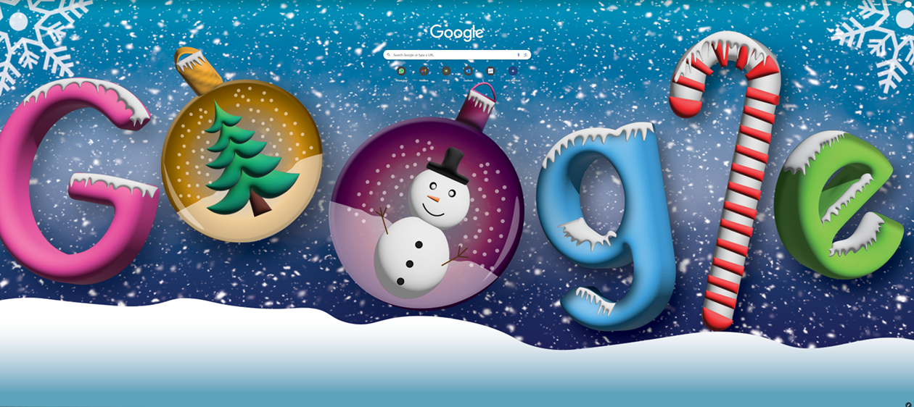
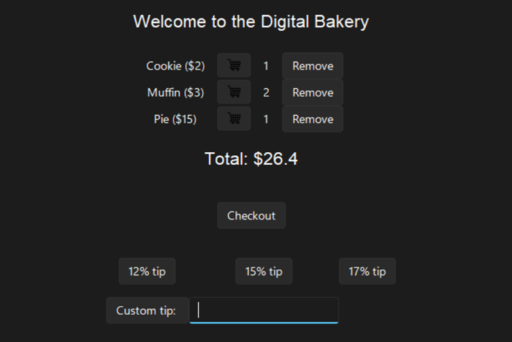
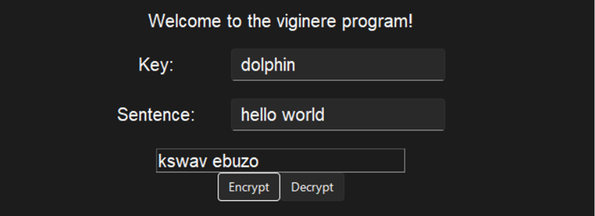

Jake Choi
Aspiring Software Developer
Honing excellence in Music, Web Dev., and Graphic Design
About Me
Hi, I am Jake, an aspiring software developer who enjoys designing and coding.
Skill Set
Python
HTML
CSS
Javascript
01 Winter Google Doodle
This Winter Google Doodle design was created using Adobe Photoshop and Adobe Illustrator. It was inspired by a Christmas advertisement I saw at a mall, particularly the two Christmas balls.

02 Digital Bakery
The focus here was on program design, style, and user experience using tkinter. A real ordering platform needs to be error-proof and user-friendly, which I aimed to achieve in this project. My partner and I worked together on this; he designed the buttons while I organized them within different frames. I was responsible for writing the functions for the buttons, while he proofread my code. We collaborated on creating a custom tip frame, with him handling the button design and me focusing on the logic for the tip frame.

03 Viginere
In this viginere cipher program, the focus here is tinkering with different methods. It took me a couple of days to finish because I got stuck in making the code of moving individual characters by the corresponding character of the key. After reviewing the slides, I figured out a different way to approach the problem, so I included two solutions for each part.
